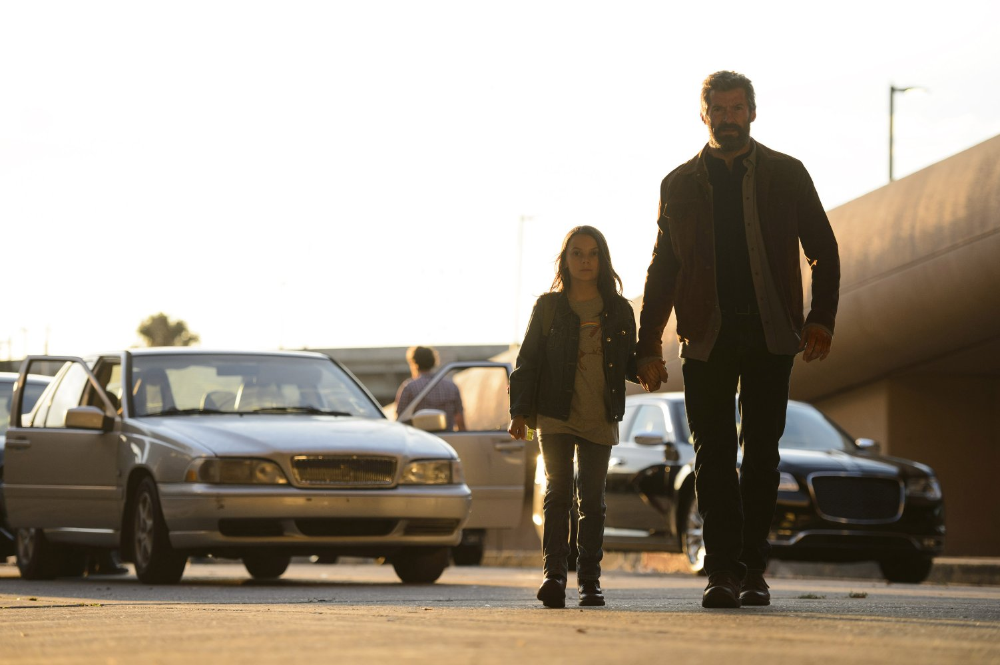
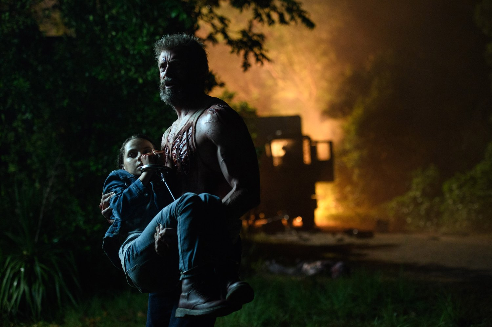
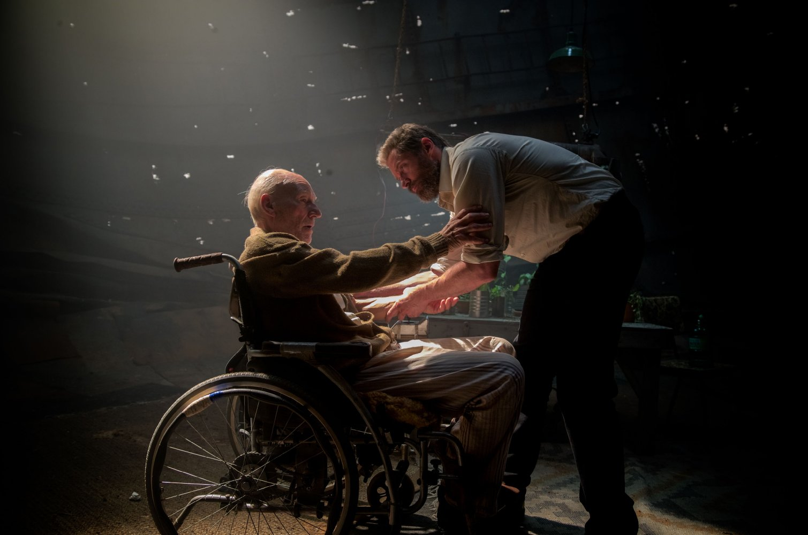
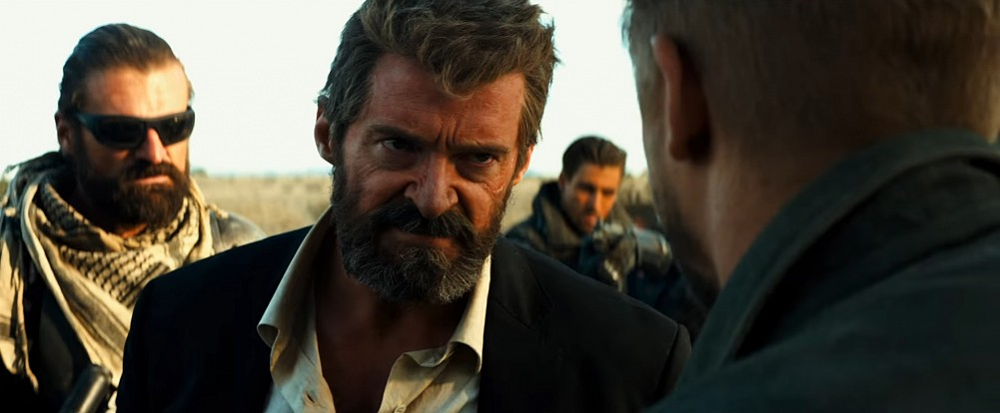
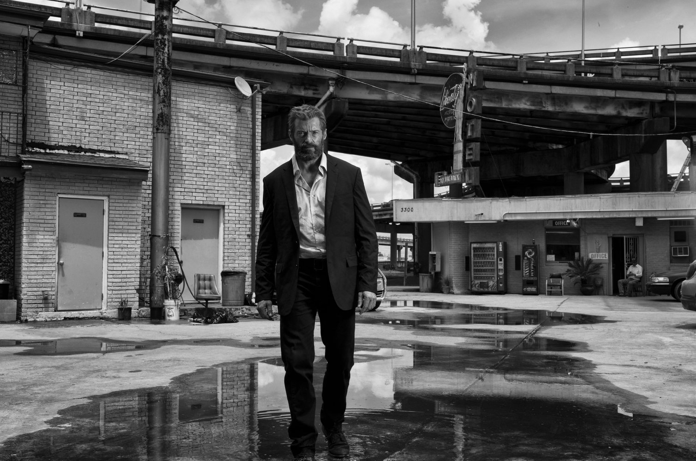
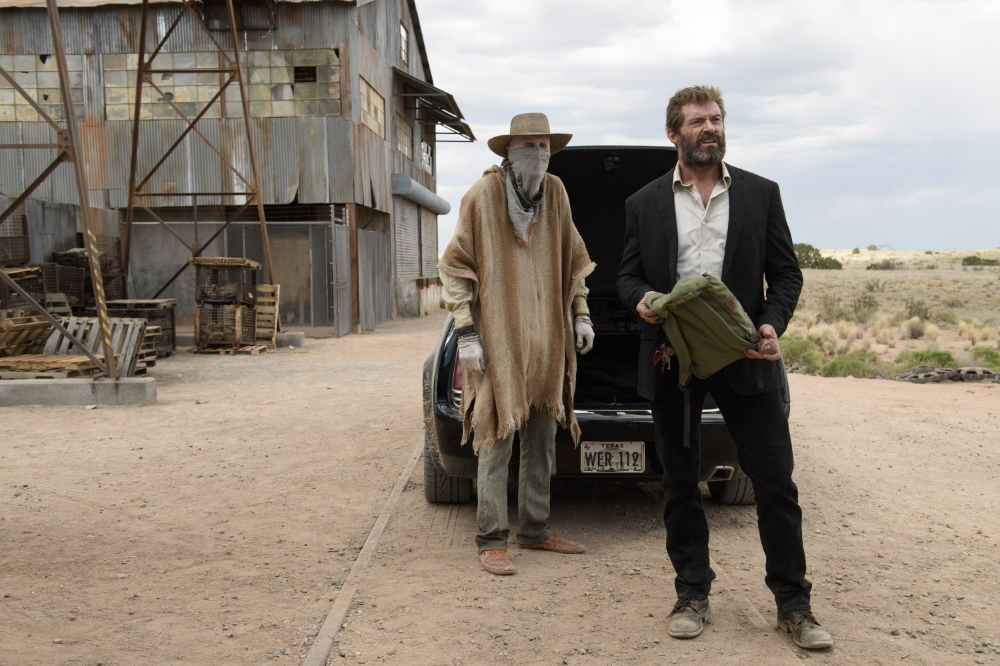
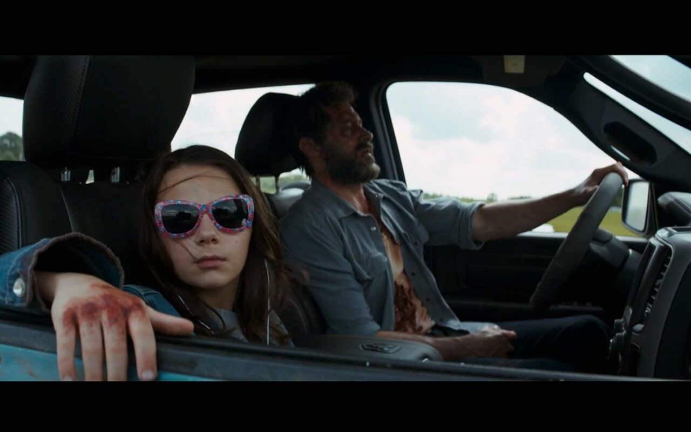
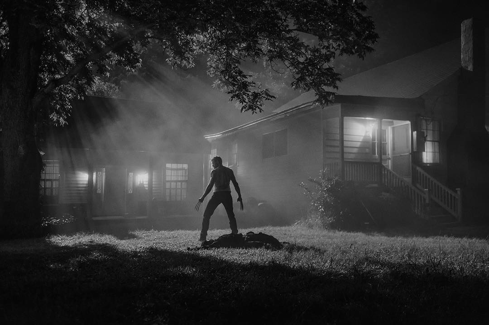
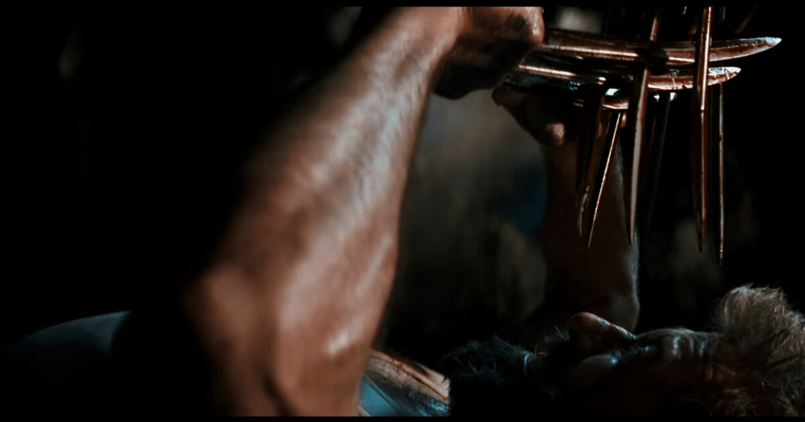

"Logan" là phần 3, cũng là phần cuối cùng trong loạt phim ngoại truyện của X-Men với nhân vật chính là người sói Wolverine. Ngay từ ban đầu, Fox hoàn toàn không giấu ý định rằng đây sẽ là lời tiễn biệt dành cho nhân vật Người Sói của nam tài tử Hugh Jackman. Và đứng ở một góc độ này, Logan không hẳn là một bộ phim siêu anh hùng như nhiều người lầm tưởng.  "Siêu anh hùng" là biểu tượng gắn liền với những chiến công được nhân loại thừa nhận, và phim siêu anh hùng cũng là những bộ phim nói về những biểu tượng này chứ không phải những con người đằng sau nó. Captain America là bộ phim nói về Đại Uý Mỹ chứ không phải là Steve Roger, con người đằng sau chiếc mặt nạ ấy. Tony Stark có thể tự hào mình là Người Sắt, nhưng anh không phải là Người Sắt duy nhất trong vũ trụ Marvel. Con người có thể chết nhưng biểu tượng là bất diệt. Steve Roger và Tony Stark có thể biến mất, nhưng vẫn sẽ có người kế thừa biểu tượng mà họ đã tạo nên.  Nhưng Logan là Logan, là bộ phim nói về Người Sói Logan chứ không phải "siêu anh hùng" Wolverine mà rất nhiều người trong chúng ta yêu mến. Logan là cuộc chiến cuối cùng của người đàn ông mang tên Logan đằng sau chiếc mặt nạ Wolverine, nhưng dẫu kết cục ra sao đi nữa thì biểu tượng Wolverine vẫn sẽ tiếp tục tồn tại. Bối cảnh của cuộc chiến cuối cùng đó là năm 2029, 25 năm kể từ dị nhân cuối cùng được sinh ra. Nhóm X-Men đã tan rã, giáo sư X phải vật lộn với căn bệnh động kinh quái ác, Logan giờ đây chỉ là một tài xế kiếm sống qua ngày khi năng lực tự hồi phục của anh suy yếu dần theo thời gian. Trong cái thế giới mà dị nhân bị ruồng bỏ và truy sát đó, ước muốn nhỏ nhoi có một cuộc sống yên bình của Logan bị đập tan khi anh phát hiện ra Laura, đứa con gái của anh bị truy sát.  Hugh Jackman, nam tài tử người Úc, chính là hiện thân của Người Sói Logan mà chúng ta đã yêu quý gần 2 thập kỷ qua. Xuyên suốt 9 bộ phim, tính cả X-Men, anh luôn biết cách chiếm trái tim khán giả bằng tài năng diễn xuất của mình. Vẻ mặt điển trai kết hợp với sự mạnh mẽ đậm chất hoang dại đã biến Wolverine trở thành nhân vật được yêu thích nhất trong X-Men, vượt mặt tất cả những dị nhân khác. Trong Logan, anh vẫn tiếp tục thành công trong việc chiếm lấy trái tim khán giả nhưng lần này là trong vai một ông lão yếu đuối và mệt mỏi.  Có thể nói gừng càng già càng cay, sau 17 năm thì đây chính là Logan xuất sắc nhất của Hugh Jackman. Vẻ mặt khắc khổ, mệt mỏi và luôn đượm buồn của Logan có khả năng khơi dậy cảm xúc của người xem thậm chí là còn hơn cả hình ảnh mạnh mẽ mà chúng ta đã quá quen thuộc trước. Cũng có thể đó là cảm xúc bồi hồi khi bất kỳ ai trong chúng ta đều hiểu được rằng đây có lẽ là lần cuối cùng mà nhân vật Logan của Hugh Jackman tung hoành trên màn bạc. Bạn biết đấy, những cuộc chia ly luôn khiến trái tim chúng ta phải thắt lại.  Logan luôn là một nhân vật cá biệt trong nhóm X-Men, và đến tận giây phút cuối cùng anh vẫn như thế. Có thể X-Men chưa bao giờ được xã hội thừa nhận là những siêu anh hùng thực thụ như Avenger, nhưng họ luôn được biết đến với tư cách là những dị nhân của chính nghĩa. Logan thì luôn là một kẻ ích kỷ, anh chẳng quan tâm đến việc cứu lấy thế giới mà chỉ quan tâm đến bản thân và những người mình yêu quý. Đó là một giáo sư X đang vật lộn với căn bệnh động kinh, đó là một Caliban gần như vô dụng, và rồi đó là Laura, đứa con gái của chính anh.  Bạn đừng nhầm, Logan không phải là phim bộ phim về tình phụ tử, càng không phải là bộ phim siêu anh hùng đi giải cứu thế giới. Logan là câu chuyện về một gã đàn ông ích kỷ muốn cứu sống những người mà anh yêu thương. Có lẽ chúng ta đã có thể xếp Logan vào thể loại phim mang tính giải trí tốt như biết bao bộ phim siêu anh hùng khác bởi kịch bản tuyến tính dễ theo dõi, nếu như bao trùm lên phim không phải là cái không khí nặng nề của một cuộc chia ly đẫm máu. Mỗi tình tiết diễn ra đưa bạn gần hơn đến hồi kết, gần hơn đến điều mà có lẽ bất kỳ fan Wolverine nào cũng lo sợ sẽ xảy ra. Và xuyên suốt chặng đường đó là những cuộc chiến tàn bạo và đẫm máu hơn tất cả những bộ phim về siêu anh hùng từ trước đến nay.  Là bộ phim siêu anh hùng thứ 2 của Marvel được dán nhãn 18+ sau Deadpool, Logan mang đậm màu sắc bạo lực. Hãy quên những cảnh chiến đấu mang đậm tính phô diễn kỹ năng của những phim siêu anh hùng, Logan là một chuỗi những trận chiến mang tính chất triệt hạ thực dụng. Nó phản ánh sự tàn bạo của hiện thực, khi mà trong cuộc chiến chỉ có kẻ giết và kẻ bị giết. Có thể không hoành tráng như những gì bạn thưởng thức trong X-Men hay Avengers, sự lạnh lùng và dứt khoát của Logan vẫn mang đến cảm giác cực kỳ thoả mãn. Nó phần nào gợi mình nhớ đến phong cách của John Wick: không có cơ hội dành cho kẻ chiến bại.  Logan vừa là một đoạn kết nhưng nó đồng thời cũng là điểm khởi đầu. Đó là cuộc chiến cuối cùng của Logan nhưng đó cũng chỉ là sự khởi đầu của rất nhiều trận chiến sau này của con gái anh. Dẫu ngay từ đầu ai cũng biết Laura là con gái Logan, nhưng phim vẫn khéo léo cuốn hút người xem thông qua việc làm sáng tỏ dần quá khứ đen tối của cô bé. Qua đó bạn có thể hiểu được vì sao mà giáo sư X luôn thúc giục Logan chiến đấu để bảo vệ Laura, ngay cả khi đối với anh tình phụ tử chỉ là thứ yếu. Nữ diễn viên nhí Dafne Keen tuy lần đầu xuất hiện trên màn bạc nhưng đã rất chững chạc. Laura của Dafne Keen cũng mạnh mẽ và hoang dại như Logan của Hugh Jackman, nhưng ẩn đằng sau đó là sự ngây thơ của một đứa trẻ.  Logan có thể không phải hay nhất, nhưng đây là bộ phim siêu anh hùng đáng nhớ nhất. Tuy vẫn có một vài hạt sạn nhỏ về kịch bản và mạch phim, Logan là lời tiễn biệt đẹp nhưng đượm buồn dành cho Logan cũng như các dị nhân mà chúng ta đã từng rất yêu mến. Một bộ phim hay và ý nghĩa mà bạn không nên bỏ qua khi đã đủ tuổi 18. Chúc các bạn vui vẻ!
Nguồn: agp8x - tinhte.vn